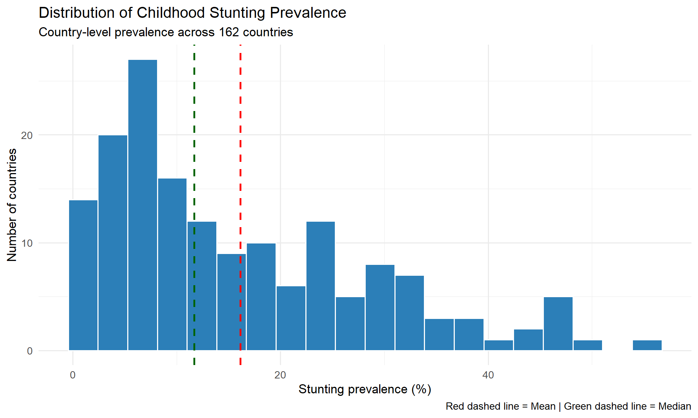
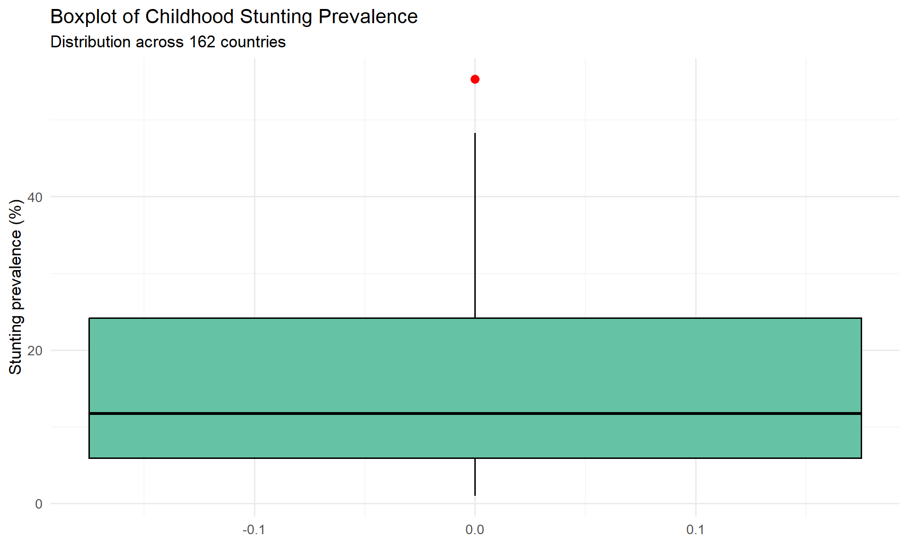
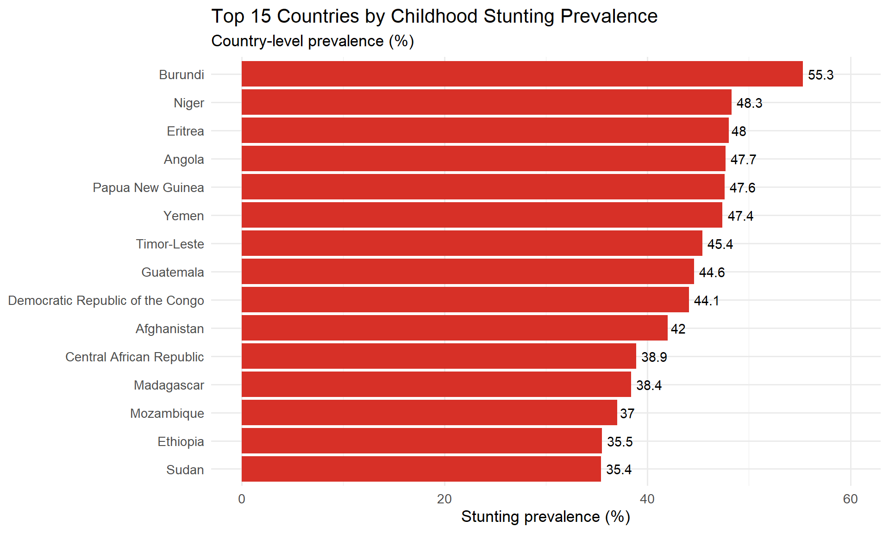
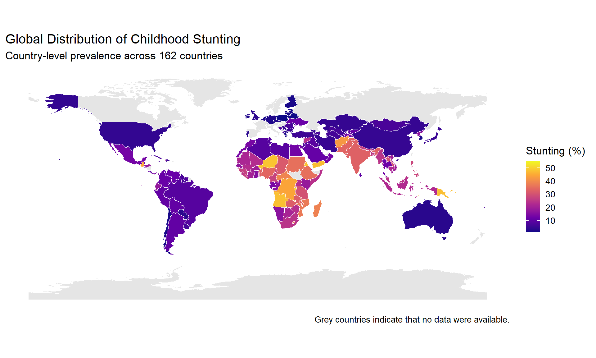
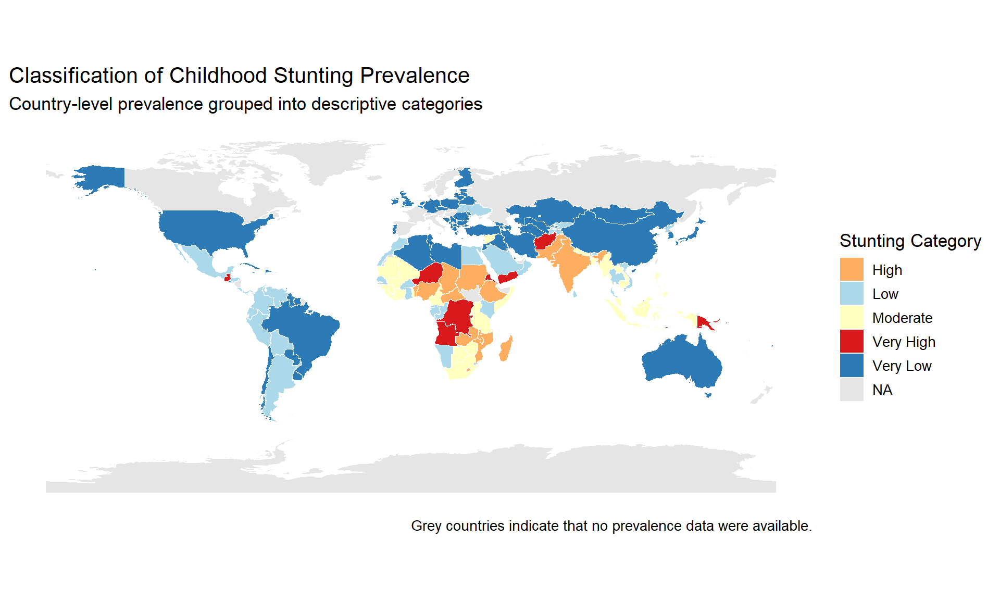

Code
# Load Packages
library(tidyverse)
library(readxl)
library(sf)
library(viridis)
library(janitor)
library(knitr)
library(scales)A Reproducible GIS Analysis in R
Childhood stunting (low-height-for age resulting from chronic undernutrition during the first 1,000 days of life) remains one of the most important indicators of chronic undernutrition and poor child health worldwide. It reflects prolonged nutritional deprivation during critical stages of growth and is associated with impaired physical development, reduced cognitive performance, lower educational attainment, and diminished economic productivit
Understanding the geographical distribution of stunting is essential for identifying areas with a greater nutritional burden and supporting evidence-based public health planning. Geographic Information Systems (GIS) provide an effective approach for visualising spatial patterns and communicating health disparities in an intuitive manner.
This project presents a reproducible workflow in R for analysing and mapping country-level childhood stunting prevalence using descriptive statistics and spatial visualisation techniques.
The objectives of this analysis are to:
# Load Packages
library(tidyverse)
library(readxl)
library(sf)
library(viridis)
library(janitor)
library(knitr)
library(scales)# Import stunting dataset
stunting <- read_excel("C:/Users/hp/Desktop/Global_Stunting_GIS/data/stunting_data.xlsx") |>
clean_names()
# Import world shapefile
world <- st_read(
"C:/Users/hp/Desktop/Global_Stunting_GIS/ne_10m_admin_0_countries.shp",
quiet = TRUE
)
# Convert stunting to numeric
stunting$stunting <- as.numeric(stunting$stunting)
# Data Overview
glimpse(stunting)Rows: 162
Columns: 3
$ iso_code <chr> "AFG", "AGO", "ALB", "ARG", "ARM", "AUS", "AZE", "BDI", "BEL"…
$ country <chr> "Afghanistan", "Angola", "Albania", "Argentina", "Armenia", "…
$ stunting <dbl> 42.0, 47.7, 7.4, 10.7, 6.2, 3.1, 6.8, 55.3, 2.6, 33.2, 19.5, …head(stunting)# A tibble: 6 × 3
iso_code country stunting
<chr> <chr> <dbl>
1 AFG Afghanistan 42
2 AGO Angola 47.7
3 ALB Albania 7.4
4 ARG Argentina 10.7
5 ARM Armenia 6.2
6 AUS Australia 3.1summary(stunting) iso_code country stunting
Length:162 Length:162 Min. : 1.00
Class :character Class :character 1st Qu.: 5.90
Mode :character Mode :character Median :11.70
Mean :16.15
3rd Qu.:24.20
Max. :55.30 colSums(is.na(stunting))iso_code country stunting
0 0 0 Interpretation
The data quality assessment indicates that there are no missing values in any of the three variables (iso_code, country, and stunting). This confirms that the dataset is complete and suitable for descriptive statistical analysis and spatial visualisation without requiring data imputation or removal of incomplete records.
Ensuring data completeness at this stage improves the reliability of subsequent analyses and minimises the risk of biased statistical summaries or incomplete geographic representations.
map_data <- world |>
left_join(stunting,
by = c("ADM0_A3" = "iso_code"))
nrow(map_data)[1] 258sum(is.na(map_data$stunting))[1] 98Interpretation
Verification of the spatial join showed that 98 polygons did not have corresponding childhood stunting data. This result was expected because the Natural Earth world shapefile contains additional geographic entities, including overseas territories, dependencies and disputed areas, whereas the analytical dataset includes 162 sovereign countries.
The unmatched polygons are displayed as missing values (NA) and appear in grey on the thematic maps. Their presence does not indicate an error in the analysis but rather reflects differences in coverage between the spatial boundary dataset and the country-level health dataset.
Overall, the verification confirms that the spatial join was successfully completed and that the resulting dataset is appropriate for subsequent GIS visualisation.
Before producing maps, it is important to understand the statistical characteristics of the dataset. Descriptive statistics provide a concise summary of the central tendency and variability of childhood stunting prevalence across countries.
This preliminary analysis helps identify the typical prevalence level, the degree of variation between countries, and any unusually high or low observations that may influence interpretation of subsequent visualisations.
summary_stats <- stunting |>
summarise(
Countries = n(),
Mean = mean(stunting),
Median = median(stunting),
Minimum = min(stunting),
Maximum = max(stunting),
Standard_Deviation = sd(stunting),
Variance = var(stunting),
Q1 = quantile(stunting, 0.25),
Q3 = quantile(stunting, 0.75),
IQR = IQR(stunting)
)
kable(summary_stats, digits = 2,
caption = "Table 1. Summary statistics of childhood stunting prevalence.")| Countries | Mean | Median | Minimum | Maximum | Standard_Deviation | Variance | Q1 | Q3 | IQR |
|---|---|---|---|---|---|---|---|---|---|
| 162 | 16.15 | 11.7 | 1 | 55.3 | 12.8 | 163.87 | 5.9 | 24.2 | 18.3 |
Interpretation
The dataset comprised 162 countries, with childhood stunting prevalence ranging from 1.0% to 55.3%. The mean prevalence was 16.2%, while the median was 11.7%, indicating that half of the countries reported stunting levels below approximately 12%.
The difference between the mean and the median suggests that the distribution is positively skewed, with a relatively small number of countries exhibiting substantially higher prevalence than the majority. This observation is supported by the maximum prevalence of 55.3%, which is considerably higher than both the average and the upper quartile.
The interquartile range (IQR) of 18.3 percentage points indicates moderate variability among the middle 50% of countries, while the standard deviation of 12.8 percentage points reflects considerable differences in childhood stunting prevalence across countries. Overall, these descriptive statistics suggest substantial global variation in childhood nutritional outcomes.
# Calculate mean and median for reference lines
mean_stunting <- mean(stunting$stunting)
median_stunting <- median(stunting$stunting)
# Create histogram
ggplot(stunting, aes(x = stunting)) +
geom_histogram(
bins = 20,
fill = "#2C7FB8",
colour = "white"
) +
geom_vline(
xintercept = mean_stunting,
colour = "red",
linewidth = 1,
linetype = "dashed"
) +
geom_vline(
xintercept = median_stunting,
colour = "darkgreen",
linewidth = 1,
linetype = "dashed"
) +
labs(
title = "Distribution of Childhood Stunting Prevalence",
subtitle = "Country-level prevalence across 162 countries",
x = "Stunting prevalence (%)",
y = "Number of countries",
caption = "Red dashed line = Mean | Green dashed line = Median"
) +
theme_minimal(base_size = 13)
Interpretation
The histogram illustrates the frequency distribution of stunting prevalence across the 162 countries included in the analysis. Most countries reported relatively low to moderate prevalence, with observations concentrated below 25%.
The mean prevalence (red dashed line) is positioned to the right of the median (green dashed line), indicating a positively skewed distribution. This suggests that although many countries experience comparatively low levels of childhood stunting, a smaller number of countries exhibit substantially higher prevalence, increasing the overall average.
The distribution demonstrates considerable variability, reflecting marked differences in childhood nutritional outcomes between countries.
ggplot(stunting, aes(y = stunting)) +
geom_boxplot(
fill = "#66C2A5",
colour = "black",
width = 0.35,
outlier.colour = "red",
outlier.size = 3
) +
labs(
title = "Boxplot of Childhood Stunting Prevalence",
subtitle = "Distribution across 162 countries",
y = "Stunting prevalence (%)",
x = NULL
) +
theme_minimal(base_size = 13)
Interpretation
The boxplot confirms the variability observed in the descriptive statistics while providing additional insight into the presence of extreme observations. The median prevalence is located closer to the lower quartile than the upper quartile, reflecting the positively skewed distribution identified in the histogram.
To complement the boxplot, countries with stunting prevalence exceeding the upper whisker are identified below. These observations represent unusually high prevalence relative to the overall distribution and may warrant additional public health attention.
Q1 <- quantile(stunting$stunting, 0.25)
Q3 <- quantile(stunting$stunting, 0.75)
IQR_value <- IQR(stunting$stunting)
upper_limit <- Q3 + 1.5 * IQR_value
outliers <- stunting |>
filter(stunting > upper_limit) |>
arrange(desc(stunting))
kable(
outliers,
caption = "Table 2. Countries identified as potential high-prevalence outliers."
)| iso_code | country | stunting |
|---|---|---|
| BDI | Burundi | 55.3 |
Interpretation
Using the conventional 1.5 × IQR criterion, only Burundi was identified as a potential statistical outlier, with a reported childhood stunting prevalence of 55.3%. This indicates that although several countries experience relatively high prevalence, only one country exhibits a value that is substantially higher than the remainder of the dataset.
The identification of Burundi as an outlier should not be interpreted as an error in the data. Rather, it represents an observation that differs markedly from the overall global distribution and highlights a country where childhood undernutrition may be particularly severe.
To better understand the global distribution of childhood stunting, countries are ranked according to their reported prevalence. The following tables present the ten countries with the highest prevalence and the ten countries with the lowest prevalence.
top10 <- stunting |>
arrange(desc(stunting)) |>
head(10)
bottom10 <- stunting |>
arrange(stunting) |>
head(10)
kable(
top10,
caption = "Table 3. Ten countries with the highest childhood stunting prevalence."
)| iso_code | country | stunting |
|---|---|---|
| BDI | Burundi | 55.3 |
| NER | Niger | 48.3 |
| ERI | Eritrea | 48.0 |
| AGO | Angola | 47.7 |
| PNG | Papua New Guinea | 47.6 |
| YEM | Yemen | 47.4 |
| TLS | Timor-Leste | 45.4 |
| GTM | Guatemala | 44.6 |
| COD | Democratic Republic of the Congo | 44.1 |
| AFG | Afghanistan | 42.0 |
kable(
bottom10,
caption = "Table 4. Ten countries with the lowest childhood stunting prevalence."
)| iso_code | country | stunting |
|---|---|---|
| POL | Poland | 1.0 |
| BLR | Belarus | 1.1 |
| EST | Estonia | 1.3 |
| LTU | Lithuania | 1.6 |
| NLD | Netherlands (Kingdom of the) | 1.6 |
| TON | Tonga | 1.6 |
| CHL | Chile | 1.7 |
| FIN | Finland | 1.7 |
| LVA | Latvia | 1.7 |
| KOR | Republic of Korea | 1.8 |
Interpretation
Ranking countries according to childhood stunting prevalence reveals substantial disparities across the 162 countries analysed. The highest recorded prevalence exceeded 50%, whereas the lowest prevalence was approximately 1%, demonstrating a difference of more than fifty percentage points between countries.
Burundi recorded the highest childhood stunting prevalence (55.3%), making it the most extreme observation in the dataset. In contrast, Poland reported the lowest prevalence (1.0%), followed by several European countries with prevalence below 2%.
The countries with the lowest prevalence are predominantly high-income nations, while the highest-prevalence countries are concentrated among low- and middle-income settings. Although this analysis is descriptive and does not investigate causal relationships, the rankings highlight considerable global inequalities in childhood nutritional outcomes and provide important context for the spatial analysis presented in the following sections.
To facilitate comparison between countries with the greatest burden of childhood stunting, the fifteen highest-prevalence countries are visualised using a horizontal bar chart. Ordering the bars from highest to lowest prevalence improves readability and highlights the magnitude of differences between countries.
top15 <- stunting |>
arrange(desc(stunting)) |>
head(15)
ggplot(
top15,
aes(
x = reorder(country, stunting),
y = stunting
)
) +
geom_col(fill = "#D73027") +
coord_flip() +
geom_text(
aes(label = stunting),
hjust = -0.2,
size = 3.8
) +
labs(
title = "Top 15 Countries by Childhood Stunting Prevalence",
subtitle = "Country-level prevalence (%)",
x = NULL,
y = "Stunting prevalence (%)"
) +
expand_limits(y = 60) +
theme_minimal(base_size = 13)
Interpretation
The ranked bar chart provides a clear visual comparison of the countries with the highest childhood stunting prevalence. Burundi recorded the highest prevalence (55.3%), followed by Niger, Eritrea, Angola and Papua New Guinea, all of which reported substantially higher prevalence than the global average of 16.2%.
The differences in bar lengths illustrate the considerable variation in childhood stunting among the highest-burden countries. Although these countries are located in different geographic regions, they share comparatively high levels of childhood undernutrition relative to the remainder of the dataset.
The figure complements the descriptive statistics by demonstrating that the overall positive skewness of the dataset is driven by a relatively small number of countries with exceptionally high prevalence.
Understanding the geographical distribution of childhood stunting is essential for identifying areas with relatively high and low nutritional burden. A choropleth map displays the prevalence of childhood stunting by country, allowing spatial patterns to be explored visually.
The map below joins the country-level prevalence data to a global administrative boundary dataset using ISO 3166-1 Alpha-3 country codes. Countries for which no prevalence data are available are displayed in light grey.
ggplot(map_data) +
geom_sf(
aes(fill = stunting),
colour = "white",
linewidth = 0.1
) +
scale_fill_viridis_c(
option = "plasma",
na.value = "grey90",
name = "Stunting (%)"
) +
labs(
title = "Global Distribution of Childhood Stunting",
subtitle = "Country-level prevalence across 162 countries",
caption = "Grey countries indicate that no data were available."
) +
theme_minimal(base_size = 13) +
theme(
legend.position = "right",
panel.grid = element_blank(),
axis.text = element_blank(),
axis.title = element_blank()
)
Interpretation
The choropleth map reveals marked geographical variation in childhood stunting prevalence across the 162 countries included in the analysis. Countries in North America, much of South America, Australia, and several parts of Europe generally exhibited lower prevalence, as indicated by the darker blue colours corresponding to values below approximately 20%.
In contrast, relatively higher prevalence was observed across several countries in West, Central, Eastern and Southern Africa, where many countries recorded prevalence between 30% and 50%. Additional high-prevalence countries were also observed outside Africa, including parts of Asia and Oceania.
Overall, the map demonstrates that childhood stunting is not distributed uniformly across the world but instead exhibits distinct geographical clustering. These spatial patterns suggest that the burden of childhood undernutrition is concentrated in particular regions rather than being evenly distributed across countries.
While continuous colour scales effectively display variation in prevalence, public health reporting often benefits from categorising observations into meaningful groups. Classification simplifies interpretation by grouping countries with similar prevalence levels into distinct categories.
The following categories were defined for descriptive purposes:
map_data <- map_data |>
mutate(
category = case_when(
stunting < 10 ~ "Very Low",
stunting < 20 ~ "Low",
stunting < 30 ~ "Moderate",
stunting < 40 ~ "High",
stunting >= 40 ~ "Very High",
TRUE ~ NA_character_
)
)
ggplot(map_data) +
geom_sf(
aes(fill = category),
colour = "white",
linewidth = 0.1
) +
scale_fill_manual(
values = c(
"Very Low" = "#2C7BB6",
"Low" = "#ABD9E9",
"Moderate" = "#FFFFBF",
"High" = "#FDAE61",
"Very High" = "#D7191C"
),
na.value = "grey90",
name = "Stunting Category"
) +
labs(
title = "Classification of Childhood Stunting Prevalence",
subtitle = "Country-level prevalence grouped into descriptive categories",
caption = "Grey countries indicate that no prevalence data were available."
) +
theme_minimal(base_size = 13) +
theme(
panel.grid = element_blank(),
axis.text = element_blank(),
axis.title = element_blank()
)
The analysis included 162 countries with reported childhood stunting prevalence ranging from 1.0% to 55.3%. The mean prevalence was 16.2%, while the median was 11.7%, indicating that most countries reported relatively low to moderate prevalence, with a smaller number of countries experiencing substantially higher levels.
The histogram and boxplot demonstrated a positively skewed distribution, with Burundi identified as the only statistical outlier using the conventional 1.5 × IQR criterion. This finding indicates that although several countries experience elevated childhood stunting prevalence, extremely high values are uncommon within the dataset.
Ranking countries revealed considerable disparities in childhood nutritional outcomes. Burundi recorded the highest prevalence (55.3%), followed by Niger, Eritrea, Angola and Papua New Guinea. Conversely, Poland reported the lowest prevalence (1.0%), followed by Belarus, Estonia, Lithuania, the Netherlands, Tonga, Chile, Finland, Latvia and the Republic of Korea.
Spatial visualisation demonstrated clear geographical variation. Lower prevalence was generally observed across North America, Australia and much of Europe, whereas relatively higher prevalence was concentrated across several countries in West, Central, Eastern and Southern Africa. Additional areas of elevated prevalence were also observed in parts of Asia and Oceania.
The categorised choropleth map further highlighted these spatial differences by grouping countries into descriptive prevalence classes, allowing regions with comparatively high childhood stunting prevalence to be readily identified.
This analysis demonstrates substantial variation in childhood stunting prevalence across countries, indicating that the burden of chronic childhood undernutrition is not evenly distributed worldwide. Both the statistical summaries and the spatial analyses consistently showed that relatively few countries account for the highest prevalence values, while many countries reported considerably lower levels.
The geographical clustering observed in the choropleth maps suggests that neighbouring countries often exhibit similar prevalence levels. Although this project was designed as a descriptive spatial analysis and therefore does not investigate causal relationships, the observed regional patterns provide a useful foundation for future studies examining socioeconomic, environmental and health-system determinants of childhood stunting.
The combination of descriptive statistics and GIS mapping illustrates how spatial analysis can improve understanding of global public health challenges by transforming numerical data into easily interpretable visual information.
This project demonstrates a complete reproducible workflow for analysing and mapping childhood stunting prevalence using R, Quarto and Geographic Information Systems. Descriptive statistical analysis revealed considerable variability in childhood stunting prevalence across the 162 countries included in the dataset, while spatial visualisation highlighted clear geographical differences in disease burden.
The integration of statistical summaries with choropleth mapping provides an effective approach for communicating public health information and identifying areas experiencing comparatively high childhood stunting prevalence. Beyond the findings themselves, this project illustrates the value of reproducible analytical workflows for supporting transparent and evidence-based public health reporting.
Future work could extend this analysis by:
sessionInfo()R version 4.5.1 (2025-06-13 ucrt)
Platform: x86_64-w64-mingw32/x64
Running under: Windows 11 x64 (build 26200)
Matrix products: default
LAPACK version 3.12.1
locale:
[1] LC_COLLATE=English_United States.utf8
[2] LC_CTYPE=English_United States.utf8
[3] LC_MONETARY=English_United States.utf8
[4] LC_NUMERIC=C
[5] LC_TIME=English_United States.utf8
time zone: Africa/Lagos
tzcode source: internal
attached base packages:
[1] stats graphics grDevices utils datasets methods base
other attached packages:
[1] scales_1.4.0 knitr_1.51 janitor_2.2.1 viridis_0.6.5
[5] viridisLite_0.4.3 sf_1.1-0 readxl_1.4.5 lubridate_1.9.4
[9] forcats_1.0.1 stringr_1.6.0 dplyr_1.2.1 purrr_1.2.0
[13] readr_2.2.0 tidyr_1.3.2 tibble_3.3.0 ggplot2_4.0.2
[17] tidyverse_2.0.0
loaded via a namespace (and not attached):
[1] utf8_1.2.6 generics_0.1.4 class_7.3-23 KernSmooth_2.23-26
[5] stringi_1.8.7 hms_1.1.4 digest_0.6.39 magrittr_2.0.4
[9] evaluate_1.0.5 grid_4.5.1 timechange_0.3.0 RColorBrewer_1.1-3
[13] fastmap_1.2.0 cellranger_1.1.0 jsonlite_2.0.0 e1071_1.7-17
[17] DBI_1.3.0 gridExtra_2.3 cli_3.6.5 rlang_1.2.0
[21] units_1.0-1 withr_3.0.2 yaml_2.3.10 otel_0.2.0
[25] tools_4.5.1 tzdb_0.5.0 vctrs_0.7.3 R6_2.6.1
[29] proxy_0.4-29 lifecycle_1.0.5 classInt_0.4-11 snakecase_0.11.1
[33] htmlwidgets_1.6.4 pkgconfig_2.0.3 pillar_1.11.1 gtable_0.3.6
[37] Rcpp_1.1.0 glue_1.8.0 xfun_0.54 tidyselect_1.2.1
[41] rstudioapi_0.18.0 farver_2.1.2 htmltools_0.5.8.1 labeling_0.4.3
[45] rmarkdown_2.31 compiler_4.5.1 S7_0.2.1